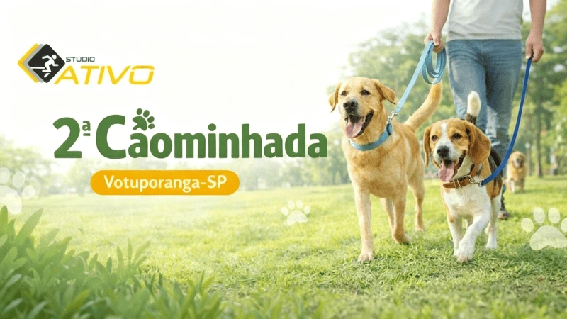

Treinões, corridas, caminhadas e momentos especiais — abertos para toda a comunidade evoluir junto!
Treino aberto de 5km seguido de Pagode A+ na Lord Lion Cervejaria. Participantes nao pagam entrada e ainda podem garantir mesa gratuita para a resenha pos-treino!
Uma noite especial para celebrar as mulheres com corrida, cerveja artesanal e muito estilo. Parceria exclusiva entre Karina Franzin e a Cervejaria Lord Lion!

Uma caminhada solidária com pets, arrecadando ração para animais que esperam por um lar. Passos que alimentam, patinhas que agradecem!
Nenhum evento passado ainda.Histórico em breve!
A gente se vê no próximo km!